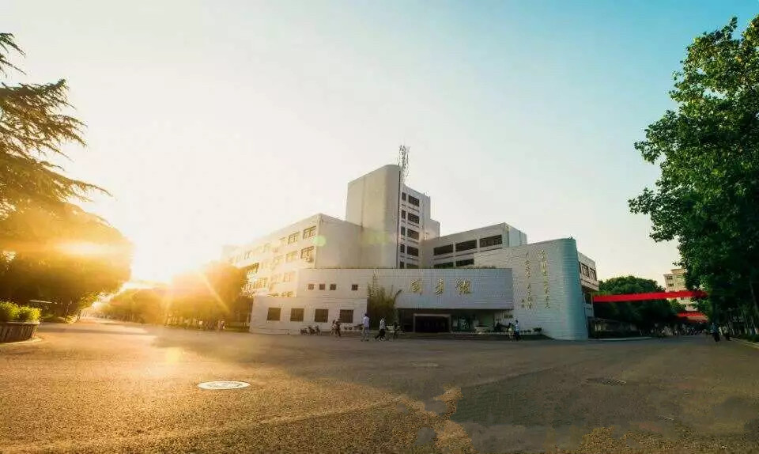

校情总览
河海大学常州校区的前身为1986年成立的河海大学机械学院，1996年5月更名为河海大学常州分校，2000年6月更名为河海大学常州校区。常州校区是河海大学具有较完整办学功能的重要组成部分，是学校建设高水平特色研究型大学的重要力量。常州校区地处江苏省苏锡常经济高速发展地区，位于“千载读书地，现代创新城”常州国家级高新技术产业开发区，与常州市行政中心毗邻，占地436亩。
常州校区设有机电工程学院、物联网工程学院、企业管理学院和基础学部。现有水利机械、物联网技术与应用2个二级学科博士点，机械工程1个一级学科硕士点，材料加工工程、通信与信息系统、低碳经济等7个二级学科硕士点，机械工程、电子与通信工程、计算机技术、工业设计工程4个全日制专业学位硕士研究生招生点，机械工程、电子与通信工程、工业工程等7个工程硕士招生领域，以及机械工程、物联网工程、会计学等15个本科专业。疏浚装备与疏浚技术、输变电设备状态监控等学科方向在省内、国内具有一定影响力，相关研发技术达到国内乃至国际先进水平。现有本科生5540人，全日制博硕士研究生560人，工程硕士300余人，外国留学研究生37人，继续教育学生5879人。教职工近600人，高级职称170余人，有博士生导师10余名，能培养水利工程、农业工程、信息与通信工程、工商管理等学科的博士生；硕士生导师百余名，能培养机械工程、材料科学与工程、信息与通信工程、控制科学与工程、统计学、经济学、教育学等学科的硕士生。

常州校区以河海大学“致高、致用、致远”教育理念为指导，始终以育人为校区中心工作，将全面发展观念、人人成才观念、多样化人才观念、终身学习观念、系统培养观念贯穿于人才培养全过程，深化推进“卓越计划”，系统实施“英才计划”，扎实推进“1442工程”，深入开展创新创业教育，形成了具有校区特色的工程英才、学术英才、管理英才和创新创业英才的人才培养新模式，引导学生个性化发展，着力提高学生实践能力和创新创业能力。作为学校“创新教育示范点”，创新教育硕果累累，在全国大学生课外学术科技作品竞赛、全国大学生电子设计竞赛、全国大学生数学建模竞赛、机器人足球世界杯、设计界“奥斯卡”红点设计奖等国内外重大比赛中捷报频传。每年30%以上的学生在国内外继续深造，毕业生就业率一直保持在95%以上，毕业生受到社会和用人单位的广泛好评。
常州校区充分依托河海大学的整体办学优势，坚持与学校协同、与水利协同、与地方协同，全面推进科研能力持续提升。目前，拥有3个省部级科研平台，其中，疏浚技术教育部工程研究中心填补了我国该领域科技平台的空白，江苏省输配电装备技术重点实验室实现了常州市江苏省重点实验室零的突破。参与“世界水谷”与水生态文明、沿海开发与保护、重大基础设施安全保障三个江苏省协同创新中心建设。“十二五”期间，新增科研经费1.1亿元，获省级以上基金项目100余项，发表三大检索论文近1000篇，获省部级以上科技奖40余项，受理发明专利近1100项，与多家大型骨干企业在光伏、智能电网、压力机、机器人等领域开展长期广泛合作，全方位服务企业技术创新和地方经济发展。
常州校区以“构建人文河海，建设和谐校园”的宗旨，打造人文、和谐、灵动的校园文化景观，构建“创新、励志、成才”立体化育人生态环境；以素质教育为核心，以“两月两节”为主线，构建全景式文化素质教育平台，将科学教育与人文教育有机结合，塑造学生“上善若水”的健康人格。

常州校区秉承学校“艰苦朴素、实事求是、严格要求、勇于探索”的校训，坚持内涵发展、特色发展、协同发展，建设成为具有鲜明特色的教学科研并重的一流校区，为学校实现“水利特色、世界一流”的宏伟目标而努力奋斗。